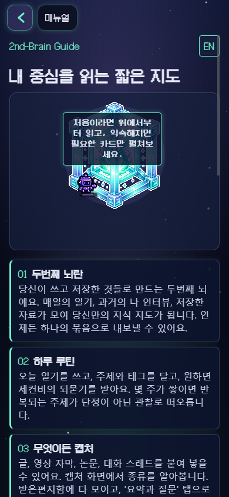

[2026-06-08 / 21:09:23 KST]
Correction: O-12 Live Mobile Re-Check
Why This Supersedes The Previous Report
The earlier Chrome headless pass used a 390px screenshot, but CDP showed the CSS viewport was actually 484px wide. That can crop the rendered page and create a false right-edge clipping signal.
Corrected Result
CDP mobile emulation forced a true 390x844 CSS viewport. /manual, /permissions, and /sign-in all reported innerWidth=390 and scrollWidth=390. Public unauthenticated mobile clipping is accepted for e0ebd6a.
{
"width": 390,
"height": 844,
"deviceScaleFactor": 1,
"mobile": true
}
Evidence
